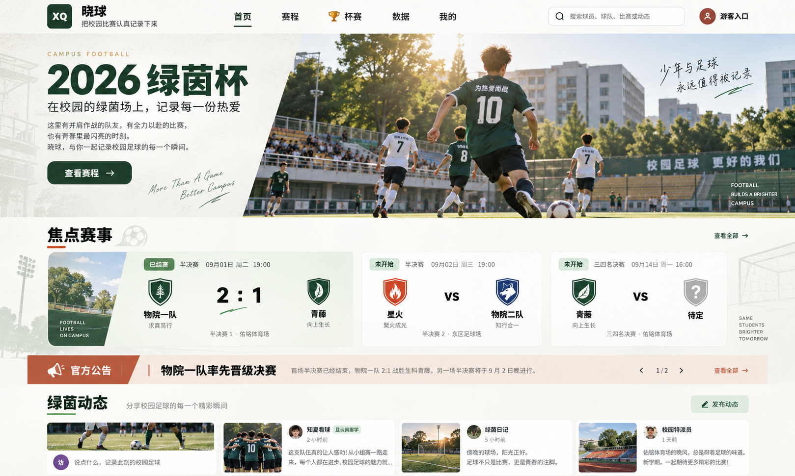
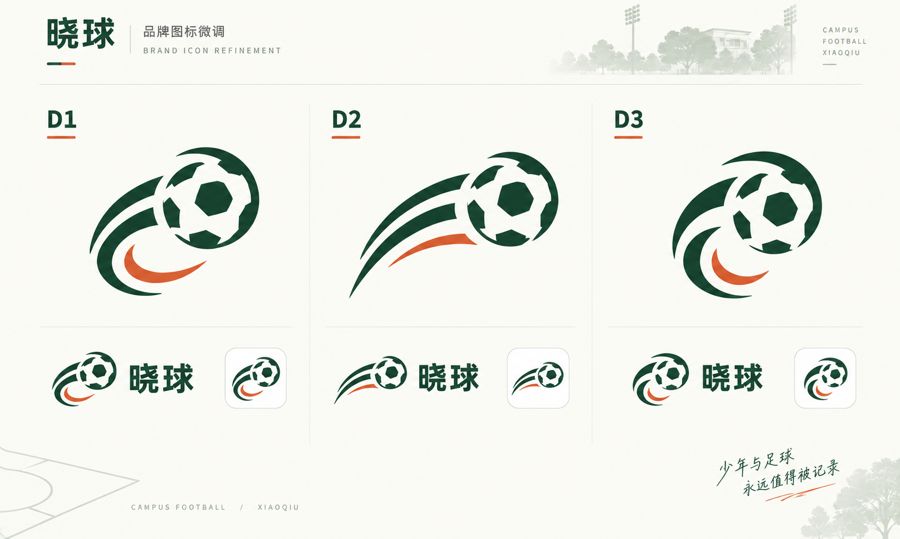
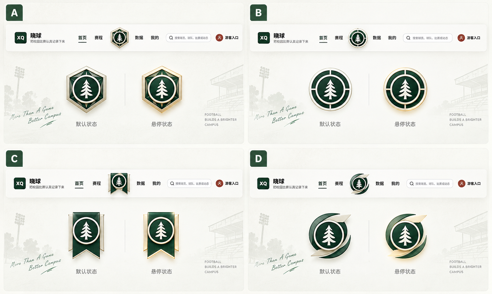
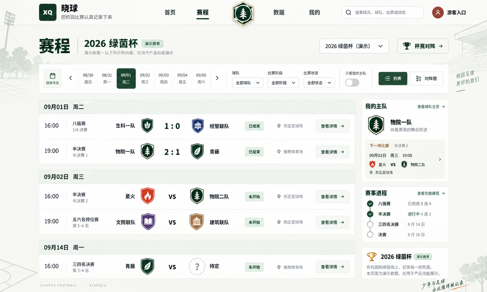
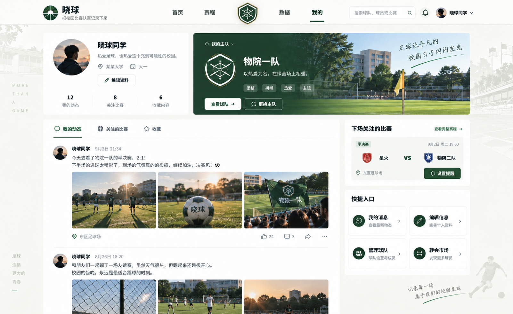
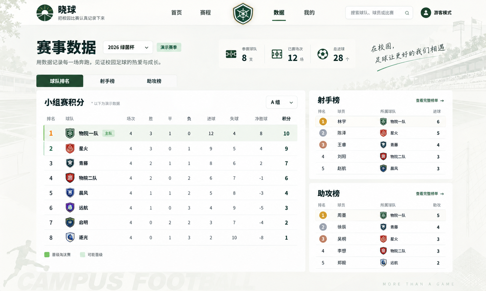
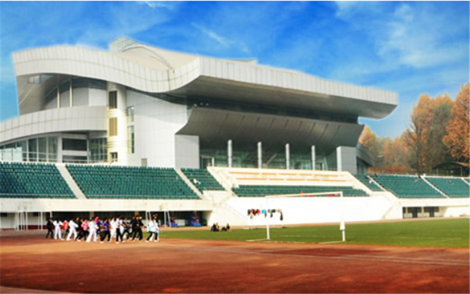
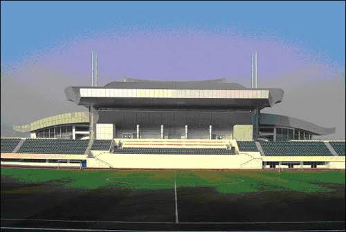
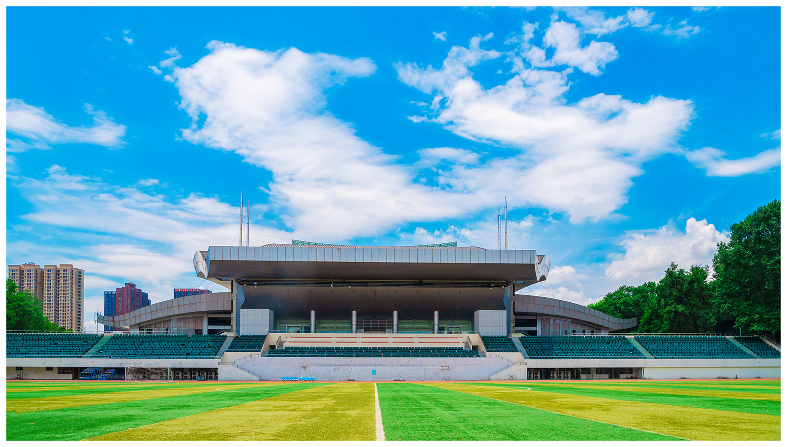

晓球 · 参考图片
12 张设计参考集中在这里。点击缩略图查看原文件。页面效果和概念图用于讨论设计，其中的示例数据、按钮与动效不代表当前产品已经实现。
页面、品牌与球场参考


认可的首页全站气质和首页布局参考01-home-approved.png


品牌候选D1/D2/D3 比较记录02-brand-candidates.png


主队按钮候选右下 D 的外框方向03-team-button-candidates.png


赛程效果图信息层级和布局参考04-schedule-reference.png


我的效果图主队封面与社区布局参考05-profile-reference.png


数据效果图表格与榜单参考06-data-reference.png


球场侧视照片体块与侧翼结构07-stadium-oblique.png


球场正视旧照片结构辅助参考08-stadium-front-older.png


球场正视清晰照片主要建筑结构参考09-stadium-front-clear.png

当前透明品牌图品牌源文件10-brand-current-transparent.png